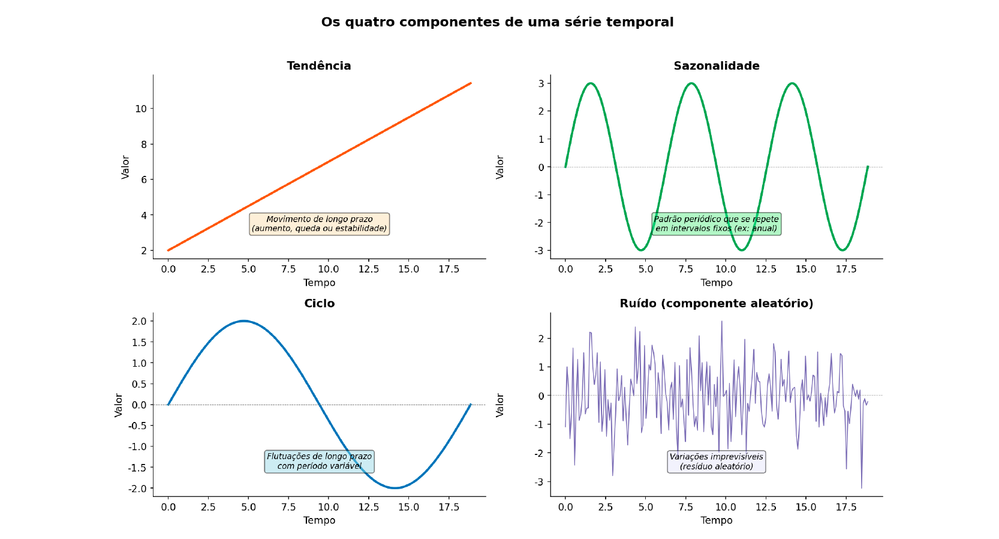
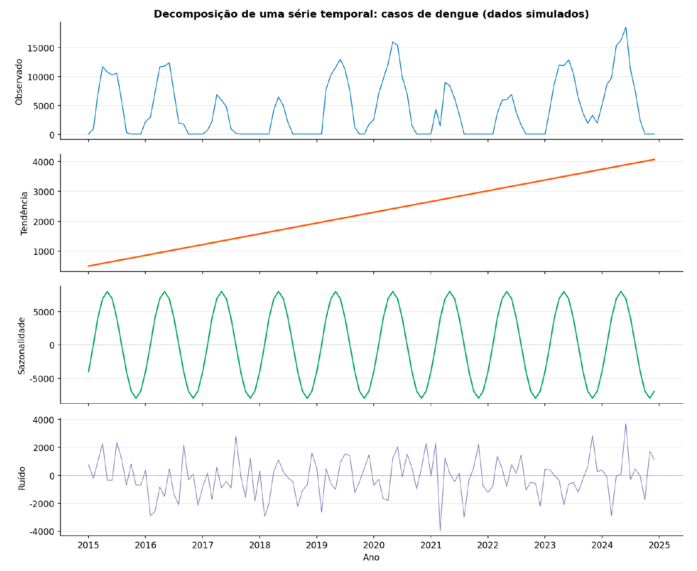
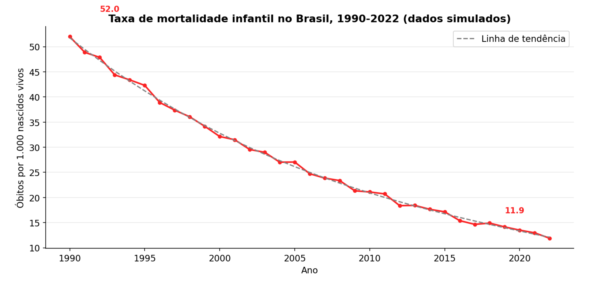
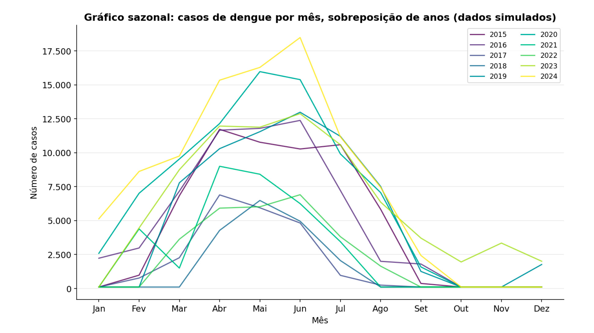

Módulo 2 | Aula 1
Análise Exploratória
Os Componentes de uma série temporal
Uma série temporal pode ser decomposta em quatro componentes principais que, juntos, explicam o comportamento da variável ao longo do tempo. A análise exploratória busca identificar a presença e a força de cada um desses componentes (LATORRE; CARDOSO, 2001) (BRASIL, 2005). A Figura 2 ilustra esquematicamente cada um deles.
Figura 2 – Representação esquemática dos quatro componentes de uma série temporal.

Fonte: Elaborado pelo autor (2026).
| Componente | Descrição | Exemplo em Saúde Pública |
|---|---|---|
| Tendência (T) | Movimento de longa duração da série, representando o aumento, a diminuição ou a estabilidade da variável ao longo de todo o período observado. | A tendência de queda da mortalidade infantil no Brasil nas últimas décadas; a tendência de aumento da prevalência de obesidade. |
| Sazonalidade (S) | Flutuações periódicas que se repetem em intervalos fixos e conhecidos de tempo, geralmente dentro de um ano (meses, trimestres). | O aumento de casos de doenças respiratórias no inverno; o pico de acidentes com animais peçonhentos no verão. |
| Ciclo (C) | Flutuações periódicas com duração variável, geralmente superior a um ano, que não possuem um intervalo fixo de repetição. Estão frequentemente associadas a ciclos econômicos ou ambientais mais amplos. | Ciclos de epidemias de dengue que ocorrem a cada 3-5 anos, relacionados a fatores como a introdução de novos sorotipos virais e flutuações na imunidade da população. |
| Ruído (R) | Também chamado de componente aleatório ou irregular, representa as variações na série que não podem ser explicadas pelos outros três componentes. É o resíduo que sobra após a remoção da tendência, sazonalidade e ciclo. | Variações diárias no número de atendimentos em uma emergência que não seguem um padrão previsível. |
Figura 3 – Exemplo de decomposição de uma série temporal de casos de dengue.

Fonte: Elaborado pelo autor (2026).
Como cada componente ajuda a explicar o comportamento geral da série de casos de dengue?
Note como a soma da tendência, sazonalidade e ruído reconstrói a série original observada. Cada componente da série temporal contribui para explicar o comportamento dos casos de dengue ao longo do tempo. A tendência mostra o aumento gradual dos casos, indicando um crescimento estrutural. A sazonalidade revela o padrão anual recorrente, com oscilações semelhantes a cada ciclo. O ruído representa variações imprevisíveis decorrentes de fatores pontuais. Quando somados a tendência + sazonalidade + ruído esses componentes reconstroem a série observada, explicando seus picos, vales e irregularidades de forma integrada.
Cronologia: a ordem importa
A cronologia é a própria essência da série temporal: a ordem sequencial das observações. A dependência entre uma observação e as anteriores é uma característica fundamental. A análise busca entender como o valor de hoje se relaciona com o valor de ontem, da semana passada ou do ano passado. Essa dependência temporal é o que diferencia a análise de séries temporais de outras análises estatísticas (LATORRE; CARDOSO, 2001).
Tendência: a direção geral
A tendência é o componente mais suave da série. Ela pode ser identificada visualmente no gráfico de linhas como a direção geral da série, como a clara tendência de queda na mortalidade infantil (Figura 4). Matematicamente, pode ser estimada ajustando-se uma reta (regressão linear) ou uma curva aos dados. A identificação correta da tendência é crucial, pois ela representa a mudança estrutural de longo prazo no fenômeno estudado (ANTUNES; CARDOSO, 2015).
Figura 4 – Exemplo de Tendência de Queda na Taxa de Mortalidade Infantil.

Fonte: Elaborado pelo autor (2026), com base em dados do IBGE/ONU.
Sazonalidade: o padrão anual
A sazonalidade é um padrão previsível que se repete a cada ano. Para identificá-la, podemos usar gráficos específicos, como o gráfico sazonal (ou de perfil), que sobrepõe os dados de cada ano em um único gráfico (de janeiro a dezembro). Se as linhas de cada ano tiverem um formato semelhante, como na Figura 5, há forte evidência de sazonalidade (BRASIL, 2005).
Figura 5 – Gráfico Sazonal para Casos de Dengue

Fonte: Elaborado pelo autor (2026).
Ciclos: as ondas de longo prazo
Os ciclos são mais difíceis de identificar do que a sazonalidade, pois não têm um período fixo. Eles representam oscilações de mais longo prazo. Em saúde pública, os ciclos epidêmicos de doenças como sarampo ou coqueluche antes da vacinação em massa são exemplos clássicos. A identificação de ciclos geralmente requer séries históricas longas e métodos estatísticos mais avançados (ANTUNES; CARDOSO, 2015).
Ruído: o imprevisível
O ruído é, por definição, imprevisível. Em um modelo ideal, o ruído deve ser puramente aleatório, sem padrões, como visto no painel "Ruído" da Figura 3. Se, após a modelagem, o ruído (resíduo) ainda apresentar algum padrão (como autocorrelação), isso indica que o modelo não capturou toda a estrutura dos dados e precisa ser refinado (LATORRE; CARDOSO, 2001).
Conclusão
A análise exploratória é um passo investigativo essencial. Ao visualizar os dados e identificar a tendência, a sazonalidade, os ciclos e o ruído, o analista de saúde ganha uma compreensão profunda do comportamento do evento de saúde ao longo do tempo, o que é fundamental para a etapa seguinte de modelagem e previsão.